３月３日將是摩卡卡滿2歲的日子嘍！
時間過得好快，轉眼間這小鬼已經跟我同居了兩年咧！
即使他不會吵著要禮物，不會因為沒有生日趴而失望
但我們還是不希望默默讓他過完每年珍貴的生日！一生只有一次2歲啊！
所以，今年我們送他的生日禮物是 -Dr.B所開創的 BARF生食肉餅
至少他吃到好吃的食物會很滿足，拿到新的球球會開心轉圈圈是唄！
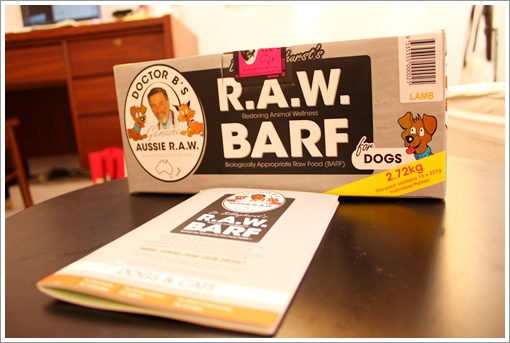
會選這個是因為上週去花花麻那偷摸在安親的丁巴特小捧油時，
（哈！他好乖好可愛 ）
）
剛好那天有幾位客人都來買巴夫，原來砸大錢的人真多啊！哈哈
當然花花麻也稍為的幫我們介紹一下，所以在回程路上，
我跟拔拔不約而同決定，就是它啦！卡卡2歲的生日禮物！
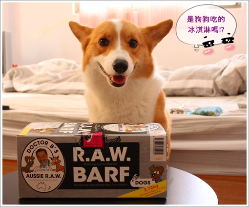
一大盒有12塊肉塊，口味有五種！每盒售價$1320
*牛肉－適合活動力強的狗狗（我們家運動量算普通）
*豬肉－適合有皮膚或關節炎的狗狗，可有效改善皮膚與關節狀況（列入考慮）
*羊肉－含大量能促進新陳代謝的肉鹼，維持狗狗健康（列入考慮）
*雞肉－建議太瘦欲增胖的狗狗食用（增胖?這口味完全踢除在名單內！XD）
*綜合－可同時攝取到最平均的營養素 (如果不會對其它肉類過敏，是蠻推薦的)
花花麻有推薦綜合，但我想或許未來有機會每種口味都試看看，所以就先不挑綜合 的.gif")
最後我們選擇羊肉口味，想說他最近莫名的發福，所以就來提高他的新陳代謝吧！
好可年～吃好料還是不忘減肥的宗旨！哈哈
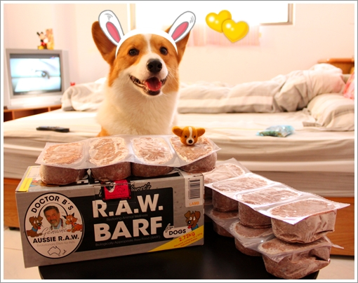
打開來看肉塊不會很大但還蠻厚實的！餵食量為體重的2%~3%
以摩卡卡來說,，一天的份量大概是一塊肉餅 (一塊肉餅約240g)
所以吃一餐的費用大概55塊吧!!歐 好貴歐~~
要長期吃下來其實還蠻傷荷苞的耶！
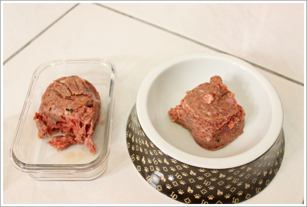
因為肉塊需要冷凍保鮮，所以我前一天會把當天要吃的肉餅放到冷藏退冰，
早晚餐剛好各半！經過一晚退冰的肉塊，中間部分還是會有一點點霜
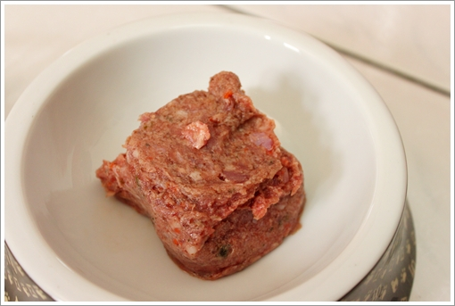
第一餐我加了點水想說吃起不會太冰也可以讓他多喝點水
（記得只能加冷水歐！）
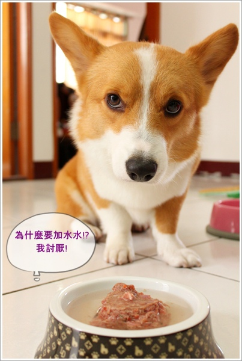
奇怪的是，我在準備的時候卡卡並沒有很興奮的跑來跑去！
只是一直用這張正經八百的臉看我！哈哈 .gif")
生肉餅聞起來有股很奇妙的味道，算是香香的吧！
但不是煮熟後的那種肉香味，所以我也不知卡卡喜不喜歡！
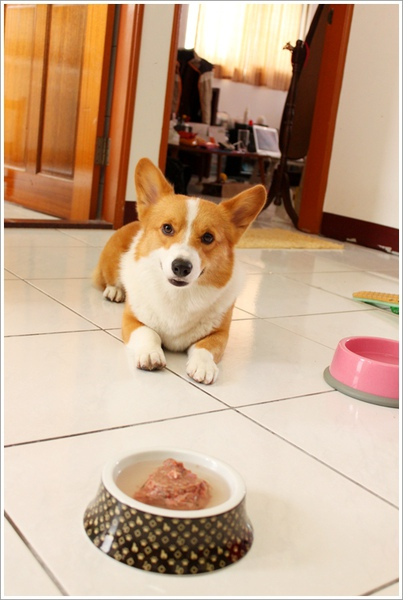
等到快開動時，這小子總算露出點笑容了！
所以剛其實是餓扁了～不想賣笑！.gif")
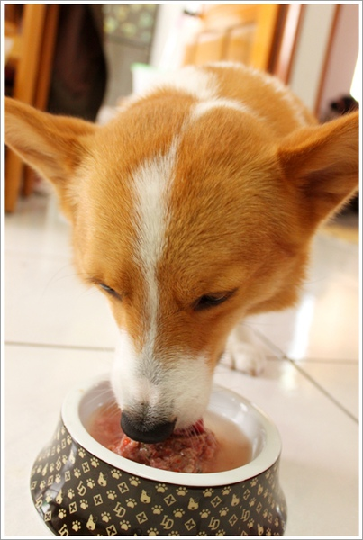
先慢慢的喝光碗裡的水！
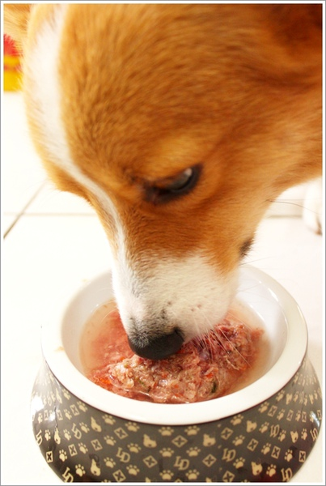
再一點一點的吃肉肉，有可能因為冰冰的關係，
卡卡並沒有狼吞虎嚥的秒殺肉餅，但還是約三分鐘就全部嗑光了！
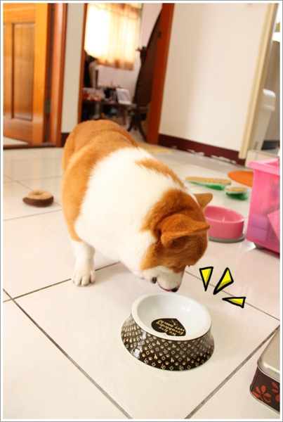
吃完又繼續他每天的活動＞＞死守窗戶看小鳥！
一聽到聲音就激動的跳來跳去！
我說我每天頭被踩爆不是開王笑的吶！
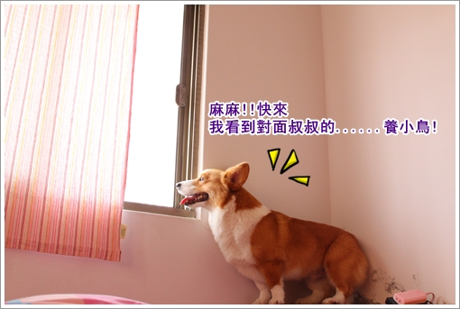
結果就在我以為他在欣賞小鳥的同時，他突然默默的走到我旁邊 吐惹！
還很乖巧的先吐在我的床上，.gif") 我趕緊把他放到地上繼續吐！
我趕緊把他放到地上繼續吐！
(啊~下圖有噁心吐吐照,請小心！)
(啊~忘記提醒你們距離看到照片只剩３公分！來不及閃惹！)
哈哈哈～在吃飯的 不要揍我！斯賣歐～～～（微笑）
（眾：怎麼有那嘛欠揍的人啊！）
其實跟吃之前長一樣啊！只是出來的是散裝嘛！
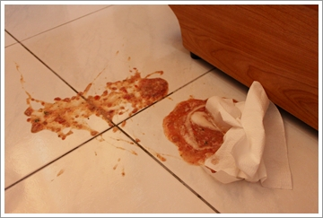
吐的原因有可能是
1.剛吃飽在那跳上跳下過於激動
2.透早呷冰腸胃不適應
有了第一餐的經驗，第二餐吃之前我會再放到常溫下３０分鐘
（常溫下可以放１個小時）
讓肉餅不會還有霜的狀態，然後先不加水！
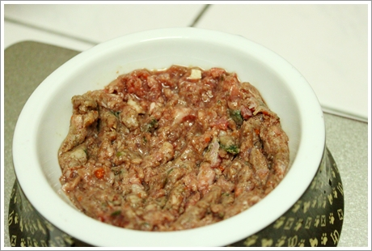
晚餐那頓開動前依舊正經八百，不茍言笑啊！哈哈哈
真的很妙，通常不是歐奇斯的食物他都會很high啊！
因為很貴所以要很有氣質的享用嗎？ 兒子～～～
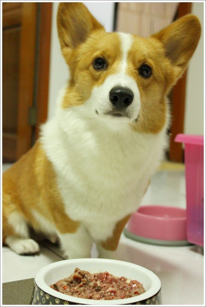
這餐吃到一半還多了中場休息時間，免得吃太快！
吃完還被我綁在十字架上不準亂動！（開玩笑的啦！XD）
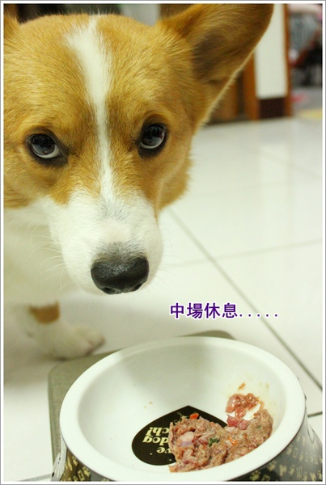
這次總算相安無事了！我跟花花麻說
再吐出來我就要全部煎熟自己吃！
為了你的一餐，我整個早上在洗床單跟擦地的！哭哭~
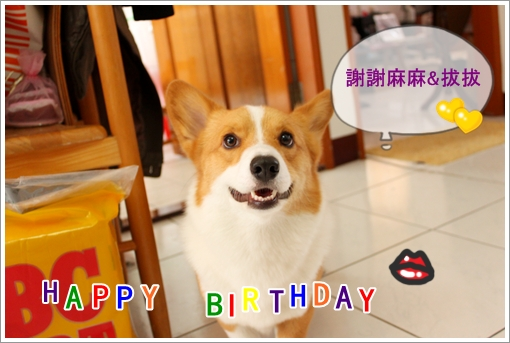
臭臭寶貝許摩卡～～謝謝你來我家當小孩！
麻麻我已經在搜集你３歲４歲５歲６歲....很多很多的生日蠟燭歐!哈哈
每年生日我們都要一起切蛋糕，一起在小網誌記上我們天兵事件！
先預祝你生日快樂歐！！ Love u my dear mocca ....
下篇預告：蠟燭好好王.gif")